Post-Earthquake Building Damage Prediction with Nepal 2015 Dataset
One of the biggest problems rescue operations face after a devastating earthquake is not knowing where to go because of the mess the destruction creates. In some regions neighborhoods may have collapsed, and in other regions only a couple of buildings may have collapsed. Additionally, in most cases communications are disrupted as well. Hence, it is impossible to reach real-time information. This situation forces rescue teams to make uninformed decisions to save as many lives as possible with the limited available information at that time.
However, earthquakes and their effects are not completely random phenomena. There are many statistical analyses that can be used to predict the extent of an earthquake's effects. Especially, with the development of modern AI technologies, making such predictions more feasible than ever.
This study focuses on developing an AI model that can make predictions about the damage a building will get post-earthquake based on structural characteristics to contribute to an informed decision-making process during rescue operations.
Phase-1: Definition & Data Collection
Key features needed in the dataset:
- Main Structural Characteristics: Age, height, foundation type etc.
- Geologic Characteristics: Ground type, ground slope, etc.
- Seismic Intensity Measures: Magnitude, ground acceleration, ground velocity etc.
I utilized multiple resources (Google Scholar, Kaggle, Perplexity AI...) for literature review and data collection, and identified the following datasets as suitable candidates for the project:
- Nepal 2015 Earthquake Dataset
- Turkey 2023 Earthquake Dataset
- ANOVA-Statistic-Reduced Building Damage Dataset
- Observed Damage Database (Da.D.O.) of Past Italian Earthquakes
One of the key limitations in statistical models developed for earthquake damage prediction is generalizability of the models. This is mainly because of the lack of diverse geographic data sources. The idea of collecting earthquake damage data has only been around for a relatively short period of time, and the effort required to collect, organize, and ensure data quality in such conditions is too much for most countries.
As a result, the statistical models developed are limited to the conditions of the training datasets' features. In order to get ahead of this problem, we can try to train a model with datasets from different regions. This will eliminate the generalizability limitations while also closing the gap created by the lack of seismic intensity measures by increasing dataset size and - if applied – relying on deep neural network complexity. Below, are the potential data collection roads and their limitations:
- ANOVA dataset is the most promising dataset that contains preprocessed numerical structural data from multiple regions and earthquakes. But unfortunately, the data is not directly accessible from the web and requires authorization.
- Nepal 2015 Earthquake dataset is the second best dataset that contains pre-earthquake structural characteristic, geographic data and post-earthquake damage data from 30+ regions. However, it is limited to only one earthquake, which weakens the generalizability of a model trained on it.
- Italy Da.D.O. dataset is also a very promising dataset that contains pre-earthquake structural data and post-earthquake damage data for multiple earthquakes and from multiple regions. Combining this dataset with Nepal 2015 dataset would be an auspicious move. Unfortunately, the dataset is limited in data points and requires authorization as well.
- The Turkey 2023 Earthquake was a recent and highly destructive occurrence that represents a valuable data source. It contains post-earthquake data from 10+ regions. However, most numerical datasets are not publicly available, and the available datasets are mostly low-resolution post-earthquake imagery data. Using this dataset may require extensive processing power and time with potentially limited favorable results.
Considering the available data collection options, the best practice is to train the model on the Nepal 2015 Earthquake Dataset while utilizing every aspect of DNN accuracy optimization.
Phase-2: Exploratory Data Analysis
The objective of this EDA is to understand the dataset's structure, identify key characteristics of the features, analyze the distribution of the target variable (building damage grade), and uncover relationships between features and damage outcomes. These insights are crucial for guiding subsequent data preprocessing, feature engineering, and model development steps aimed at predicting building damage levels.
1. Data Overview
df.shape
df.info()
df.describe()
df.isnull().sum()
Shape: The dataset contains information on 260,601 buildings, with 39 initial features (including building ID and damage grade).
Data Types: Features include numerical data (e.g., age, count_floors_pre_eq), categorical data represented as objects (e.g., foundation_type, land_surface_condition), categorical data represented as numerical IDs (e.g., geo_level_1_id, geo_level_2_id, geo_level_3_id), and binary flags (e.g., has_superstructure_*, has_secondary_use_*).
Missing Values: An initial check revealed no missing values in the provided dataset columns, simplifying the preprocessing pipeline significantly.
2. Target Variable Analysis (damage_grade)
The target variable, damage_grade, represents the level of damage sustained by buildings, categorized into three grades (likely 1: Low Damage, 2: Medium Damage, 3: Severe Damage/Collapse).
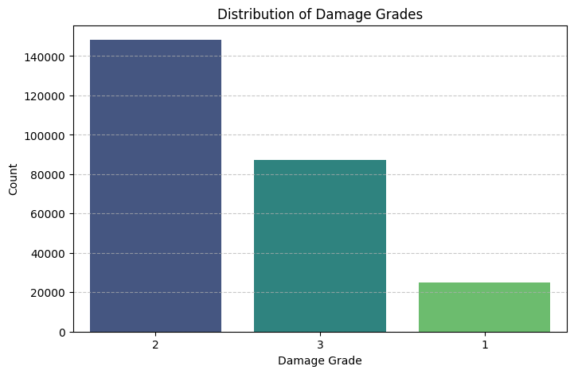
Distribution: The analysis reveals a significant class imbalance.
Damage Grade 2 is the most prevalent class. Damage Grade 3 is the second most common. Damage Grade 1 is the least frequent class.
Implications: This imbalance necessitates careful handling during modeling:
- Stratified Splitting: Essential to ensure training, validation, and test sets maintain representative proportions of each damage grade.
- Evaluation Metrics: Accuracy alone will be misleading. Metrics sensitive to imbalance, such as Macro/Weighted F1-score, Precision, Recall per class, and Confusion Matrices, should be prioritized.
- Modeling Techniques: Techniques like class weighting during training or specialized resampling methods (e.g., SMOTE, though potentially complex with this dataset size) might be considered if initial models struggle with minority classes.
3. Numerical Feature Analysis
Key numerical features analyzed include count_floors_pre_eq, age, area_percentage, height_percentage, and count_families.
Distributions:
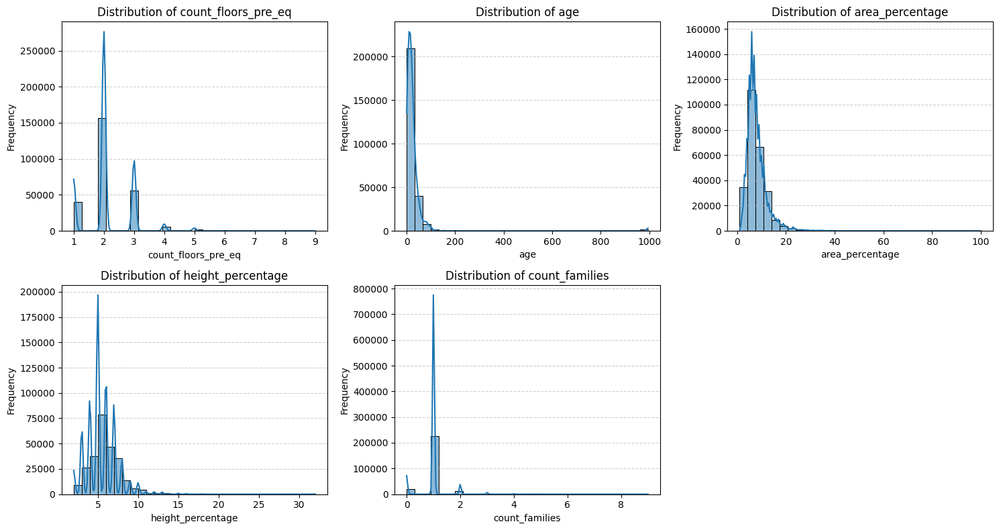
- Most numerical features (count_floors_pre_eq, age, area_percentage, height_percentage) exhibit right-skewed distributions, indicating that the majority of buildings have fewer floors, are younger, have smaller footprints, and lower heights, with fewer instances of large/tall/old buildings.
- Age shows a particularly strong peak at lower values and a very long tail, with some values near 1000 suggesting potential outliers or a coded value needing verification or capping.
- count_families shows extremely low variance, with the vast majority of buildings having only 1 family. This suggests limited predictive power.
Relationship with Target:
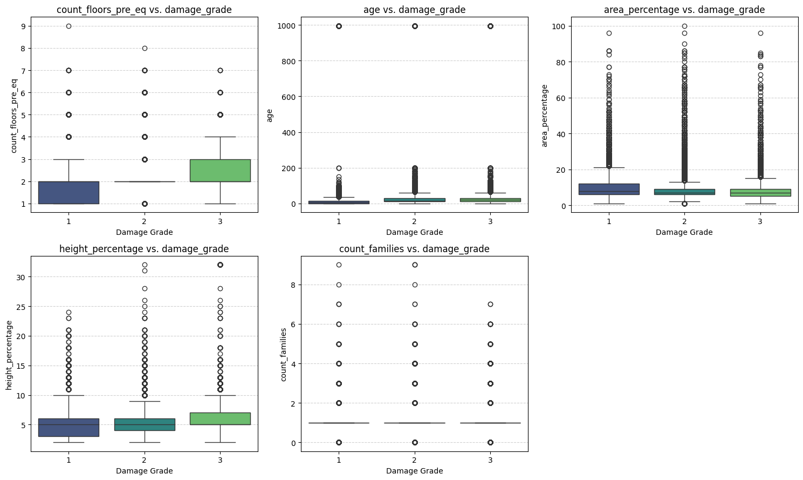
- count_floors_pre_eq and height_percentage show a clear positive association with damage grade; median values increase as damage severity increases.
- area_percentage displays a slight negative trend, with the median area potentially decreasing for higher damage grades.
- age shows a less distinct trend in median values, but the spread (IQR and outliers) increases for higher damage grades, suggesting a complex relationship or increased vulnerability variability in older structures.
- count_families shows virtually no difference across damage grades, confirming its likely low predictive value.
Correlations:
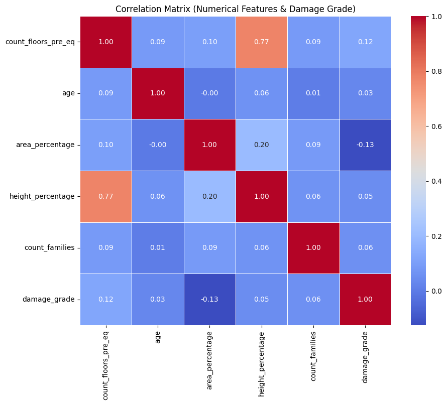
- Linear correlations between numerical features and damage_grade are generally weak (absolute values mostly < 0.15). This indicates that non-linear relationships or, more likely, interactions with categorical features (especially materials and location) are driving damage outcomes.
- A strong positive correlation (0.77) exists between count_floors_pre_eq and height_percentage, confirming their informational redundancy.
4. Categorical Feature Analysis
Cardinality (Unique Values):
- Binary: has_superstructure_* and has_secondary_use_* features confirmed as binary (0/1). has_superstructure_* flags require no further encoding.
- Low-Cardinality: Features like land_surface_condition, foundation_type, roof_type, ground_floor_type, other_floor_type, position, plan_configuration, legal_ownership_status have a small number of unique values (3–10), making them suitable for One-Hot Encoding.
- High-Cardinality: geo_level_1_id (31) is manageable but adds columns. geo_level_2_id (1414) and geo_level_3_id (11595) have very high cardinality, confirming that direct One-Hot Encoding is infeasible due to dimensionality explosion.
Relationship with Target:
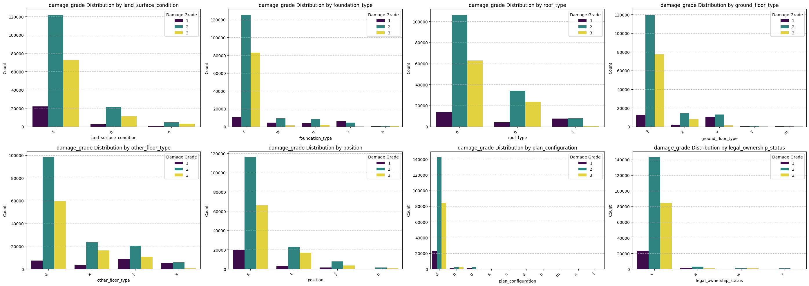
- Material Features: Construction materials (foundation_type, roof_type, ground_floor_type, has_superstructure_*) demonstrate very strong predictive power. Categories representing weaker materials (mud, adobe, non-engineered RC, heavy roofs) show significantly higher proportions of severe damage (Grade 3), while stronger materials (engineered RC, appropriate foundations) correlate strongly with lower damage grades (Grade 1 & 2).
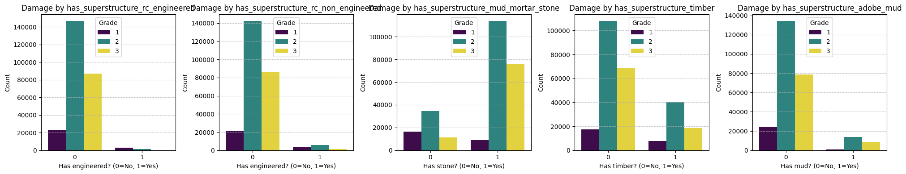
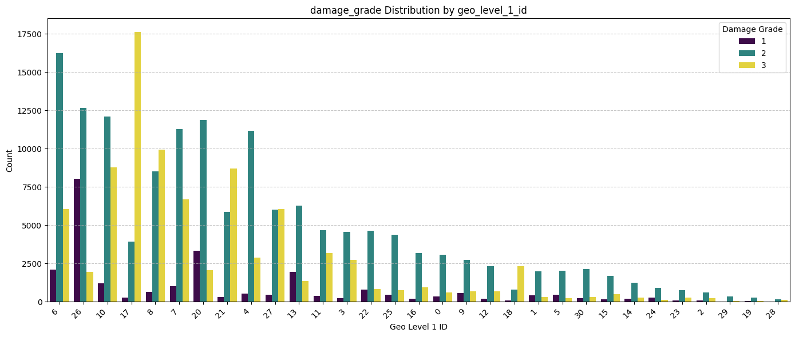
- Geographic Location: geo_level_1_id shows critical importance. Damage distributions vary dramatically across different regions, highlighting its role as a proxy for ground shaking intensity and/or regional vulnerability factors within this specific earthquake event. This strongly supports retaining location information in the model.
- Site/Geometry: land_surface_condition (steep slope) and plan_configuration (irregular shapes) show some association with higher damage grades, suggesting moderate importance.
- Other Categoricals: position and legal_ownership_status show less pronounced differences in damage proportions across their categories, indicating potentially lower predictive importance compared to material and location.
5. Key Findings & Implications for Modeling
- The dataset is clean with no missing values.
- The target variable damage_grade is imbalanced, requiring stratified sampling and appropriate evaluation metrics (e.g., F1-score).
- Categorical features, particularly those related to construction materials and geographic location, appear to be the strongest predictors of damage.
- Numerical features like building size/height (count_floors_pre_eq, height_percentage) show clear relationships with damage, although linear correlations are weak. age has a complex relationship, and count_families has negligible value.
- High multicollinearity exists between count_floors_pre_eq and height_percentage.
6. Preprocessing Strategy Must Address:
- Categorical Encoding: One-Hot Encoding for low-cardinality features. Careful handling of high-cardinality geo_level_ids is essential (e.g., dropping finer levels, using embeddings, or target encoding if complexity allows). has_superstructure_* flags are already binary.
- Numerical Scaling: Necessary for neural network performance.
- Feature Selection: Dropping features with very low variance/predictive power identified during EDA (e.g., count_families, potentially has_secondary_use_* flags, legal_ownership_status, position).
7. Conclusion (EDA)
This EDA confirms the dataset's richness and suitability for building a machine learning model to predict earthquake building damage. The analysis highlights the dominant influence of construction materials and location-based factors (proxied by geo IDs) in this specific event. Key challenges include handling the imbalanced target variable and efficiently encoding high-cardinality geographic features.
Phase-3: Preprocessing
1. Dropping Features
In this step, the features that proved to be ineffective in damage prediction in EDA will be dropped.
Additionally, although geo_level_*_id features hold high predictive potential, their high cardinality leads to dimensionality explosion in one-hot encoding that is used for categorical features. Therefore, to keep prediction potential high while preventing dimensionality explosion only the geo_level_3_id feature will be dropped due to its high cardinality (11,595 unique values).
# Dropping low impact / problematic features based on EDA
irrelevant = [col for col in df.columns if col.startswith('has_secondary_')]
irrelevant.append('count_families')
irrelevant.append('legal_ownership_status')
irrelevant.append('geo_level_3_id')
irrelevant.append('position')
df.drop(columns=irrelevant, inplace=True)
2. Splitting the Dataset
It is crucial to do the split before encoding and scaling to prevent data leakage. The dataset is large enough to add validation set as well. The dataset is split into 3 parts:
- 70% Train | 15% Validation | 15% Test
y = df[TARGET_COLUMN]
X = df.drop(columns = [TARGET_COLUMN])
y = y-1 # adjusting damage grade to be 0 indexed for keras
X_train_val, X_test, y_train_val, y_test = train_test_split(
X, y,
test_size=0.15,
random_state=13,
stratify=y
)
X_train, X_val, y_train, y_val = train_test_split(
X_train_val, y_train_val,
test_size=0.1765, # 15% of the original set
random_state=17,
stratify=y_train_val
)
3. Scaling, Encoding & Transforming Features
Firstly, we create different lists for different processes.
# Categorical Columns for one-hot encoding
ohe_cols = sorted (list(set(
X_train.select_dtypes(include='object').columns.tolist()
+ ['geo_level_1_id'] + ['geo_level_2_id'])))
# Binary Passthrough Columns:
bin_cols = sorted([
col for col in X_train.columns if col.startswith('has_superstructure_')])
# Numerical Columns to Scale:
num_cols = sorted([
col for col in X_train.columns if col not in ohe_cols and col not in bin_cols])
Secondly, initiating scaler and encoder:
scaler = StandardScaler()
encoder = OneHotEncoder(sparse_output=False, handle_unknown='ignore', dtype=np.int8)
scaler.fit(X_train[num_cols])
encoder.fit(X_train[ohe_cols])
Finishing:
X_train_final = np.hstack([X_train_num, X_train_bin, X_train_ohe])
X_val_final = np.hstack([X_val_num, X_val_bin, X_val_ohe])
X_test_final = np.hstack([X_test_num, X_test_bin, X_test_ohe])
y_train_final = y_train.to_numpy()
y_val_final = y_val.to_numpy()
y_test_final = y_test.to_numpy()
Now, all three sets are encoded and scaled. Additionally, all sets were converted to numpy arrays for their efficient structure, which contributes to faster training.
Phase-4: Model Development & Training
I used scikit-learn, keras, pandas, numpy, and matplotlib libraries in python to develop the model. In order to account for the lack of data with desired quality and relation a DNN model will be used.
The model was initiated with the following structure:
model = Sequential(name="EarthquakeDamage_MLP_v1")
model.add(Input(shape=(X_train_final.shape[1],), name="Input_Layer"))
model.add(Dense(128, activation='relu', name='Hidden_Layer_1'))
model.add(Dropout(rate=0.3, name='Dropout_1'))
model.add(Dense(64, activation='relu', name='Hidden_Layer_2'))
model.add(Dropout(rate=0.3, name='Dropout_2'))
# Output Layer
model.add(Dense(len(np.unique(y_train_final)), activation='softmax', name='Output_Layer'))
# Compiling the model
optimizer = tf.keras.optimizers.Adam(learning_rate=0.001)
model.compile(
optimizer=optimizer,
loss='sparse_categorical_crossentropy',
metrics=['accuracy']
)
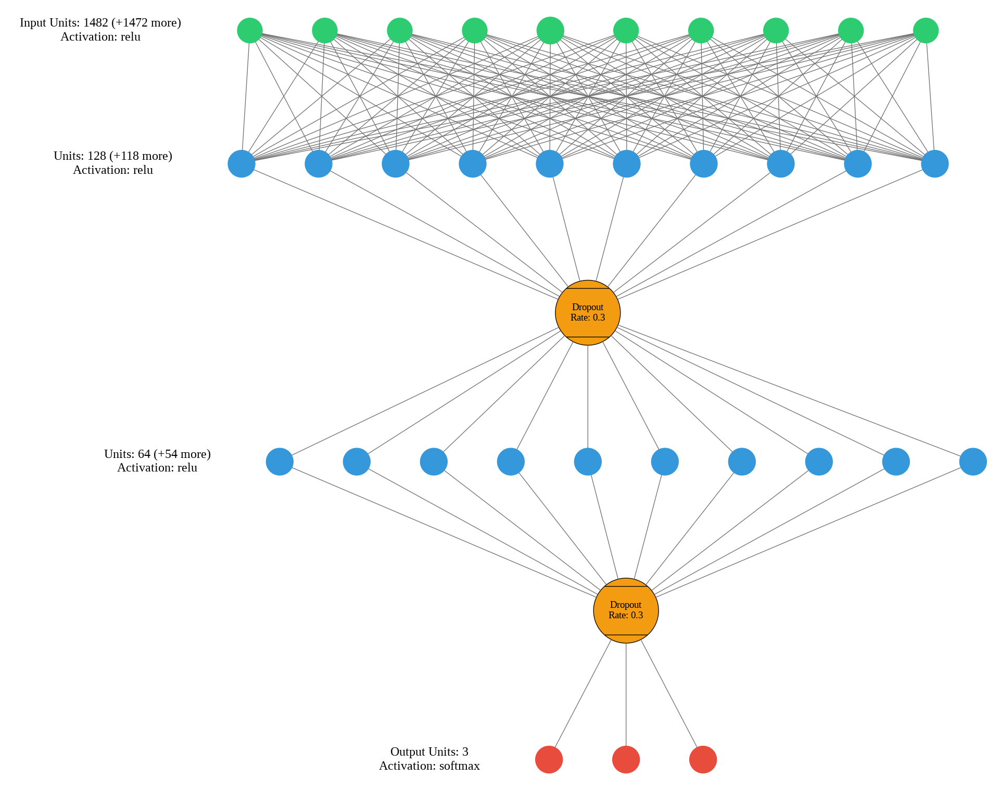
Dropout layers with 0.3 rate where used to prevent overfitting to training dataset due to size and complexity.
Additionally, early stopping mechanism was added to prevent overfitting.
early_stopping = EarlyStopping(
monitor='val_loss',
patience=10,
restore_best_weights=True,
verbose=1,
mode='min'
)
# Training the model
history = model.fit(
X_train_final,
y_train_final,
batch_size=128,
epochs=100,
validation_data=(X_val_final, y_val_final),
callbacks=[early_stopping],
verbose=1
)
Phase 5: Testing & Evaluation
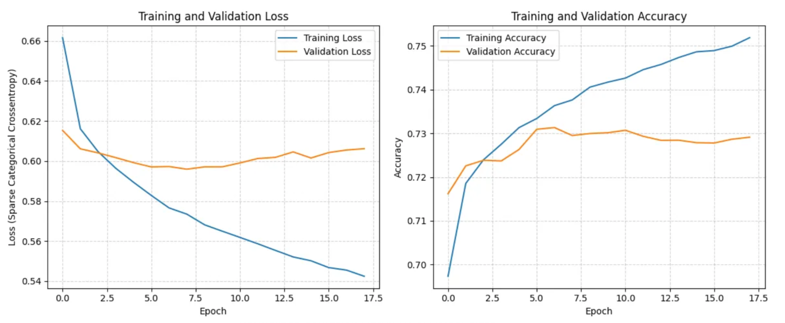
| Metric | Precision | Recall | F1-score | Support |
|---|---|---|---|---|
| Grade 1 | 0.65 | 0.50 | 0.56 | 3769 |
| Grade 2 | 0.73 | 0.85 | 0.79 | 22239 |
| Grade 3 | 0.76 | 0.61 | 0.68 | 13083 |
| Accuracy | 0.73 | 39091 | ||
| Macro Avg | 0.72 | 0.65 | 0.68 | 39091 |
| Weighted Avg | 0.73 | 0.73 | 0.73 | 39091 |
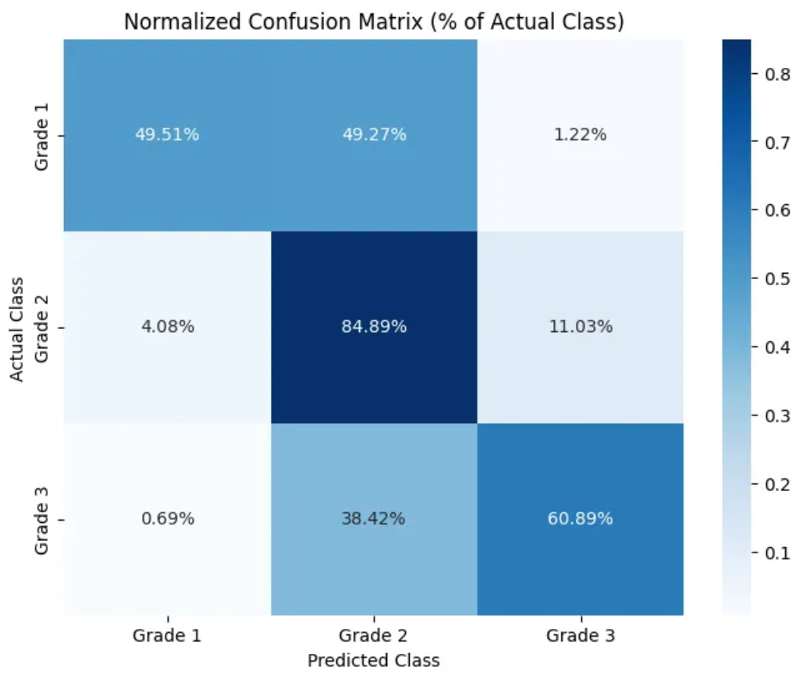
The initial accuracy of the model at 73% is promisingly high without any optimization methods used.
However, the distribution of accuracy across classes is very imbalanced. Especially in grade-1, the model has an accuracy below 50%. This is probably due to the imbalance in the original dataset. We can try to balance the weights in training to fix this issue. Afterwards, we can tune hyperparameters and optimize model structure to optimize model accuracy.
Phase 6: Optimization and Refinement
1. Balancing Weights Across Damage Categories
At first, I tried balancing the weights statistically using class_weight function from scikit-learn. The function over-balanced the weights, causing the accuracy for grade-2 predictions to decrease significantly. Additionally, overall accuracy decreased by 5%.
unique_classes = np.unique(y_train_final)
weights = class_weight.compute_class_weight(
class_weight='balanced',
classes=unique_classes,
y=y_train_final
)
class_weights_dict = dict(zip(unique_classes, weights))
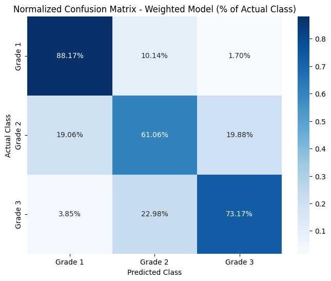
| Metric | Precision | Recall | F1-score | Support |
|---|---|---|---|---|
| Grade 1 | 0.41 | 0.88 | 0.56 | 3769 |
| Grade 2 | 0.80 | 0.61 | 0.69 | 22239 |
| Grade 3 | 0.68 | 0.73 | 0.71 | 13083 |
| Accuracy | 0.68 | 39091 | ||
| Macro Avg | 0.63 | 0.74 | 0.65 | 39091 |
| Weighted Avg | 0.72 | 0.68 | 0.68 | 39091 |
Therefore, I decided to edit the weights manually in the next 2 trials and edited the weights to be:
manual_weights_dict = {0:2.9,1:1,2:1.3}
At the end, although the accuracy across classes had gotten better, the overall accuracy dropped to 72%. Still, arguably, this model overall performs better since it is more balanced across classes.
2. Hyperparameter Tuning
Since early stopping function was utilized, epoch number was optimized automatically. The hyperparameters left:
- Learning Rate (0.001, 0.01, 0.005)
- Batch Size (32,64, 128, 256)
I did about 5–6 trials to manually optimize hyperparameters in this step. Nevertheless, the tuning did not enhance model accuracy by a considerable amount.
| Metric | Precision | Recall | F1-score | Support |
|---|---|---|---|---|
| Grade 1 | 0.51 | 0.77 | 0.61 | 3769 |
| Grade 2 | 0.77 | 0.75 | 0.76 | 22239 |
| Grade 3 | 0.73 | 0.66 | 0.69 | 13083 |
| Accuracy | 0.72 | 39091 | ||
| Macro Avg | 0.67 | 0.73 | 0.69 | 39091 |
| Weighted Avg | 0.73 | 0.72 | 0.72 | 39091 |
3. DNN Structure Optimization
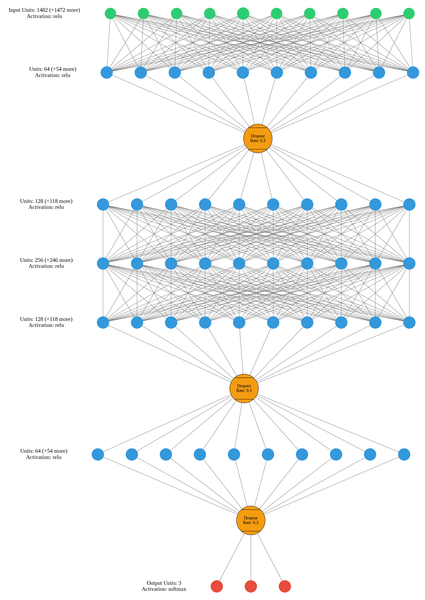
| Metric | Precision | Recall | F1-score | Support |
|---|---|---|---|---|
| Grade 1 | 0.55 | 0.69 | 0.61 | 3769 |
| Grade 2 | 0.74 | 0.80 | 0.77 | 22239 |
| Grade 3 | 0.75 | 0.59 | 0.66 | 13083 |
| Accuracy | 0.72 | 39091 | ||
| Macro Avg | 0.68 | 0.69 | 0.68 | 39091 |
| Weighted Avg | 0.72 | 0.72 | 0.72 | 39091 |
Here, I made about 10 trials to optimize hidden layer, neuron and dropout layer numbers. I tried multiple structures and complexified the model as much as possible to enhance accuracy. However, I didn't see a substantial increase in overall accuracy, although there were some improvements in per-class metrics.
Phase 7: Final Model
After completing all 3 steps of the optimization phase and tens of trials, I built the final optimized model. This model was chosen as the optimum of the following features:
- Accuracy
- Efficiency
- Balance across classes
Code, Structure and Results:
keras.backend.clear_session()
final_model = Sequential(name="EarthquakeDamage_MLP_ManualWeight")
final_model.add(Input(shape=(X_train_final.shape[1],), name="Input_Layer"))
final_model.add(Dense(128, activation='relu', name='Hidden_Layer_1'))
final_model.add(Dropout(0.3, name='Dropout_1'))
final_model.add(Dense(64, activation='relu', name='Hidden_Layer_2'))
final_model.add(Dropout(0.3, name='Dropout_2'))
final_model.add(Dense(len(np.unique(y_train_final)), activation='softmax', name='Output_L')) # Name was truncated in OCR
optimizer = tf.keras.optimizers.Adam(learning_rate=0.001)
final_model.compile(
optimizer=optimizer,
loss='sparse_categorical_crossentropy',
metrics=['accuracy']
)
manual_weights_dict = {0:2.9,1:1,2:1.3}
final_early_stopping = EarlyStopping(
monitor='val_loss',
patience=10,
restore_best_weights=True,
verbose=1,
mode='min'
)
history_final = final_model.fit(
X_train_final,
y_train_final,
batch_size=256,
epochs=100,
validation_data=(X_val_final, y_val_final),
callbacks=[final_early_stopping],
class_weight=manual_weights_dict,
verbose=1
)
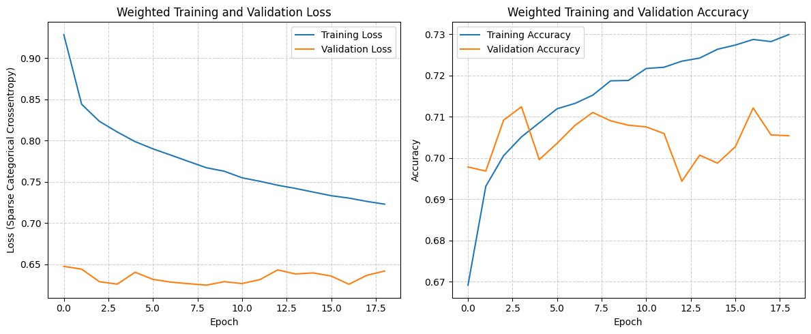
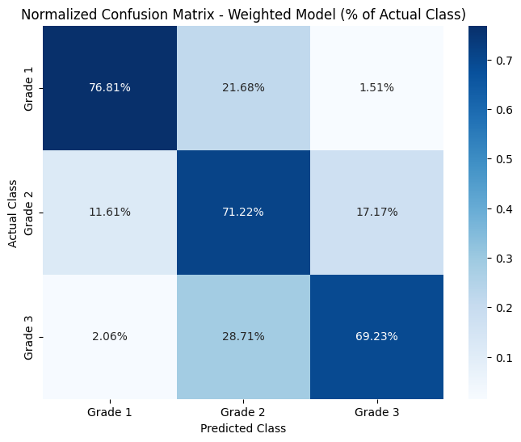
| Metric | Precision | Recall | F1-score | Support |
|---|---|---|---|---|
| Grade 1 | 0.50 | 0.77 | 0.61 | 3769 |
| Grade 2 | 0.78 | 0.71 | 0.74 | 22239 |
| Grade 3 | 0.70 | 0.69 | 0.70 | 13083 |
| Accuracy | 0.71 | 39091 | ||
| Macro Avg | 0.66 | 0.72 | 0.68 | 39091 |
| Weighted Avg | 0.72 | 0.71 | 0.71 | 39091 |
Conclusion
This project aimed to develop a ML model to predict post-earthquake damage in buildings to help rescue teams make informed decisions and plan the rescue operations more accurately to save more lives.
The model was trained on the best dataset available: Nepal 2015 Earthquake Dataset. Because of limitations in the dataset (e.g., lack of earthquake diversity, missing seismic intensity measures) and challenges during training (e.g., dimensionality explosion from encoding), the model has limitations in generalizability.
Afterwards, weight balancing, model structure optimization, and hyperparameter tuning methodologies were utilized to improve model accuracy. The final model achieved around 70–75% accuracy across all 3 damage grades. Although the model have not reached the desired accuracy results in this field, the potential of this modeling approach remains valid.
I am confident that reliable models that can be used in real life scenarios can be achieved if the limitations faced during data collection and training are resolved.
Reflections
Firstly, the most challenging aspect of the project was finding the required data to train the model. I had to review tens of datasets and articles. Some datasets required authorization, some were randomly collected, and others complied only partially with the requirements. As I could not access the desired datasets, the model had serious limitations from the beginning. Despite all these challenges, I decided to try building a model. This experience highlighted the value of attempting to build a prototype even under imperfect conditions.
Secondly, during the initial stages of development and preprocessing, I mistakenly applied encoding and scaling before splitting the dataset. This resulted in data leakage and inconsistencies in performance across the training, validation, and testing sets. I had to fix the problem by updating preprocessing from the beginning.
Lastly, over-organizing the code slowed down the refinement process too much for me. Initially, I separated the model training into multiple cells. I then duplicated these cells for each refinement trial, adjusting the desired values. The separation of cells slowed down the process and required repetitive steps. Near the end, I re-organized the code into a single cell and started doing the adjustments on it to speed the process up.
Code & Data Source
- DrivenData. (2019). Richter's Predictor: Modeling Earthquake Damage. Retrieved on 04/04/2025 from https://www.drivendata.org/competitions/57/nepal-earthquake.
- https://colab.research.google.com/drive/18HbOpe4-QWwrWUYsObeiZMY4cvRVV8uI?usp=sharing
by Faisal Durbaa
E-mail: durbaafaisal@gmail.com